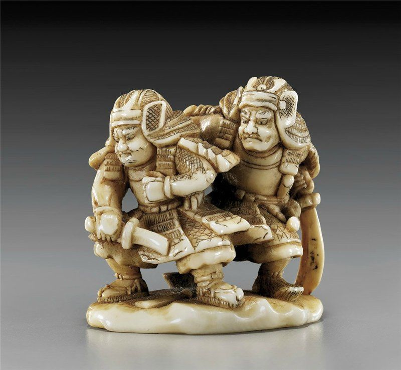
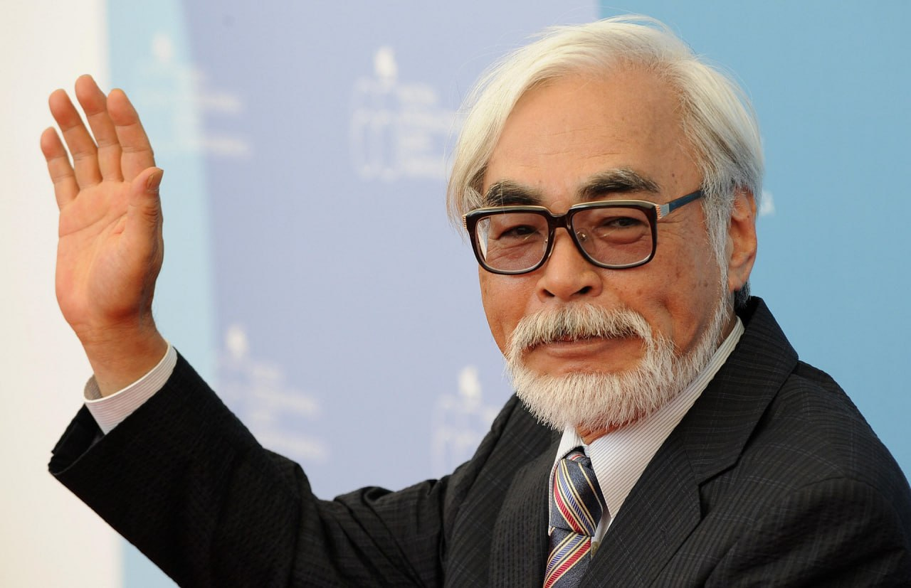

Культура японии и ее особенности
Особенности развития страны
Япония долгое время была изолирована от других государств. Пока другие страны активно контактировали друг с другом, тем самым обмениваясь культурами, Япония жила самостоятельно, развивая свои уникальные и непривычные нам обычаи и ценности.
Гейши - люди искусства
Гейша - это древняя традиционная японская профессия. Дословно иероглифы в слове гейша (芸者) означают искусство (芸) и человек (者). Получается, что гейши - это люди искусства. Довольно обобщенная, но достаточно точная характеристика деятельности этих женщин.

Рис. 1 Гейши
Главная задача гейши – развлечение гостей. В круг главных компетенций этих девушек входят исполнение традиционного японского пения и танца. Они организовывают и проводят с гостями традиционную чайную церемонию и ведут с ними беседу. Гейше нужно быть очень образованной и воспитанной, чтобы уметь поддержать разговор на любую тему и иметь возможность подстроиться под любое общество.
Внешность гейш
Гейши всегда облачаются в традиционный наряд, основой которого является кимоно из тонкого шелка. На лицо и открытые плечи наносится большой объем белил, глаза ярко подведены. Кимоно подпоясывается поясом со сложным узлом, завязанным сзади. Чем старше гейша, тем менее вызывающий у нее макияж.
Рис.2 Облачение гейши
Также заслуживает внимания прическа гейши. Это достаточно сложная конструкция, и сделать такую прическу самостоятельно невозможно. На помощь девушкам приходят специальные парикмахеры, которые укладывают волосы так, что прическа может держаться до двух недель. Возникает вопрос: как гейши спят с такой прической? Для того, чтобы прическа сохранялась во время сна, была придумана специальная деревянная подставка с жестким валиком — такамакуру.
Рис.3 Такамакуру
Иногда она делалась из камня. На нее клали голову, а прическа свешивалась сзади и не деформировалась. Но спать в одной позе строго на спине было очень неудобно, но таковы издержки профессии. Опытные гейши получали огромную привилегию — они имели право носить парик. Это значительно облегчало жизнь.
Гейш разделяют на три категории по этапу становления:
1. Сикоми.Молодая девушка находится внутри школы и не имеет право покинуть ее территорию
без разрешения наставницы. Основные задачи на данном этапе – обучение и выполнение
хозяйственных поручений.
2. Минари(что переводится как «смотри и учись»). Девушки получают возможность принимать
участие в светских мероприятиях, сопровождая старших «сестер». Им запрещается проявлять
инициативу, единственная задача – наблюдение за учителем. В конце этапа нужно сдать
экзамен – станцевать древний танец кёмай.
3. Майко.Девушки имеют право самостоятельного передвижения, помогают гейшам в проведении
мероприятий, нередко их подменяют. После сдачи экзамена имеют право покинуть территорию окия
и начать собственную карьеру, то есть начать развлекать гостей в традиционных заведениях.

Рис.4 Юная майко
Распорядок дня
День учениц гейш начинался с подъема в 8:00, старших – в 10:00. После прохождения гигиенических процедур все шли завтракать, после чего начинались занятия. Их конкретный перечень зависел от школы и специализации каждой гейши. Стандартный перечень включал занятие танцами, музыкой, а также искусством составления композиции из цветов – икебаной. Школы города Андзё, также обучали будущих гейш умению играть на флейте нокан.

Рис.5 Игра на флейте нокан
В 18:00 учебный день заканчивался. Гейши плотно ужинали (на работе есть им запрещалось), накладывали макияж, надевали рабочее кимоно и направлялись на работу. Заканчивался день тогда, когда заканчивалось мероприятие. Обычно – около часа ночи, но иногда и намного позже.
Самая известная гейша
Самой известной гейшей в истории Японии принято называть Минэко Ивасаки. Родилась она в 1949 году и происходила из семьи разорившегося самурая. В свое время она была самой дорогой гейшей Японии, но в 29 лет ушла из профессии, пройдя обряд хики-иваи. Известность ей принесло то, что именно на ее мемуарах основан знаменитый роман «Мемуары гейши»
Рис.6 Минэко Ивасаки
Каллиграфия
Сёдо (書道, «Путь письма») или японская каллиграфия — это искусство изящного письма. Сёдо берет свои корни в Китае.

Рис.7 Японка занимается каллиграфией
Инструменты
Минимальный набор для письма состоит из бумаги, пера и туши. Также для каллиграфии могут быть использованы авторучка с пастой различных цветов, акварель, гуашь, чернила, баллончик с краской (для граффити), пастель, уголь и многое другое. До появления перьев письменные знаки высекались на камне, выдавливались палочкой на глине.
Рис.8 Инструменты для каллиграфии
Самураи
Япония – страна отважных самураев и смелых сегунов. О доблести и отваге японских воинов
известно всему свету. Самураи – это неотъемлемая часть японской культуры, ее отличительный
символ. Верности и дисциплинированности самураев смог бы позавидовать любой воин.
Самурай (侍) – в переводе с японского «воин». Еще это слово имеет несколько других значений –
«служить», «поддерживать», «слуга», «вассал» и «подчиненный». То есть самурай – это воин,
который служит своему государству и яростно его защищает. Из старинных японских летописей
известно, что самурай являлся дворянином. Они занимались не только военными действиями.
В мирное время самураи служили высшим князьям и были их телохранителями.
Рис.9 Самураи
История
Первые самураи появились в Японии в начале 12 столетия. В тот период государством правил
отважный сегун Минамото. Это были достаточно мирные времена, поэтому численность самураев
была сравнительно небольшой. Воины принимали активное участие в мирной жизни – выращивали
рис, воспитывали детей, обучали боевым искусствам.
В период правления великого японского клана сегунов Токугава, число самураев увеличилось
почти втрое. Они, верно, служили своему сегуну, владели немалыми земельными участками. При
Токугаве, эти воины считались самыми зажиточными людьми.
Во времена Токугавы бил издан большой свод самурайских законов. Главным из них считался
закон «Бусидо». В нем говорилось о том, что воин должен безоговорочно подчиняться своему
господину и смело глядеть смерти в лицо. Кроме того, самурай наделялся правом безнаказанно
убивать обычного крестьянина, который непозволительно грубо относился к воинам. В мирные
времена самураи, верно, служили своему сегуну, а иногда принимали участие в подавлении
крестьянских мятежей.
Были и такие самураи, которые со временем перешли в класс ронинов. Ронины – это бывшие воины,
которые избавились от вассальной зависимости. Такие самураи жили как обычные люди: вели
торговую, ремесленную и земледельческую деятельность.
Многие самураи становились синоби. Синоби – это убийцы по найму, своего рода ниндзя.
В середине 18 столетия, начался распад самурайского сословия. В этот период стала активно
прогрессировать японская буржуазия. Процветала торговля, ремесло и мануфактура. Многие
самураи были вынуждены брать в долг у ростовщиков. Положение самураев становилось
невыносимым. Их роль для страны стала непонятной даже им самим. Некоторые старались
приспособиться к мирной жизни, многие ударились в религию. Другие превратились в торговцев,
ремесленников и земледельцев. А самураев — бунтовщиков, просто убивали, окончательно
подрывая их волю и дух.
Воспитание и становление самурая
Воспитание самурая – это сложный, многоуровневый процесс. Становление воина начиналось с
ранних лет. Уже с детства сыновья самураев знали, что являются продолжателями своего рода и
надежными хранителями семейных обычаев и традиций.
Каждый вечер, перед сном, ребенку рассказывали об истории и отваге самураев, об их подвигах.
В историях приводились примеры, когда легендарные самураи смело, смотрели смерти в лицо. Тем
самым ребенку с детства прививали храбрость и доблесть.
Важным аспектом самурайского воспитания являлась техника Бушидо. Она вносила понятие
старшинства, главного в семье. Мальчикам с ранних лет втолковывали, что мужчина – глава
семьи, и только он может определять направление деятельности своего ребенка. Другая японская
техника Иэмото – обучала мальчиков дисциплине и поведению. Техника имела сугубо
теоретический характер.
Кроме того, мальчиков с детства приучали к суровым испытаниям. Обучали различным боевым
искусствам, терпимости к боли, владению собственным телом, умению подчиняться. Развивали
силу воли, умение преодолевать даже самые суровые жизненные ситуации. Были времена, когда
мальчикам устраивали проверку на выносливость. Для этого их поднимали на рассвете и
отправляли в холодную, не отапливаемую комнату. Там их закрывали и долго не кормили.
Некоторые отцы заставляли своих сыновей идти ночью на кладбище. Так они прививали мальчикам
смелость доблестного воина. Другие водили своих сыновей на казни, заставляли выполнять
непосильную работу, ходить без обуви по снегу, проводить несколько ночей без сна.
В возрасте 5 лет, мальчику дарили боккэн. Боккэн – меч самурая. С этих пор начиналось
обучение искусству фехтования. Кроме того, будущий воин должен был уметь отлично плавать,
великолепно держаться в седле, быть грамотным в письме, литературе и истории. Мальчикам
преподавали уроки самообороны – джиу-джитсу. Кроме того, их обучали музыке, философии и
ремеслу. В возрасте 15 лет, мальчик превращался в доблестного самурая.
Кокэси, дарума, нэцкэ и тэру-тэру-бодзу
Куколки кокэси
Традиционные японские куколки кокэси (小芥子) изготавливаются из дерева и покрываются росписью. Куколки появились в конце периода правления клана Эдо, отмеченного в истории страны как эпоха процветания литературы, искусств и ремесел. Кокэси считается куклой эпохи японского возрождения.
Рис.10 Кокэси
Дарума
Дарума (だるま или 達磨) - японская традиционная кукла-неваляшка, олицетворяющая Бодхидхарму, в японской синкретической мифологии — божество, приносящее счастье.
Рис.11 Дарума
Нэцкэ
Нэцкэ (根付) — миниатюрная скульптура, произведение японского декоративно-прикладного искусства, представляющее собой небольшой резной брелок.
Рис.12 Нэцкэ
Тэру-тэру-бодзу
Тэру-тэру-бодзу (てるてる坊主) - традиционная японская кукла-амулет ручной работы, изготавливаемая из простой белой бумаги или белой ткани. По своей форме такие куклы напоминают кукол-«призраков». Японские крестьяне считали, что этот амулет обладает магической силой и способен приносить хорошую погоду и прекращать, предотвращать или вызывать дождь; с этой целью его вывешивали под навесом дома или карнизом окна. Японский глагол «тэру» описывает действие солнца, а «бодзу» означает буддийского монаха (сродни «бонза») либо, что в большей степени характерно для современного сленга, — «лысый»; это слово также иногда используется как ласковое прозвище для маленьких мальчиков.
Рис.13 Тэру-тэру-бодзу
Бонсай, икебана, сад камней и оригами
Бонсай
Бонсай (盆栽) - это искусство выращивания точной копии настоящего дерева в миниатюре. Одно из направлений дендроарта. Рост растений регулируется за счёт обрезки, прищипки, ограничения размеров корневой системы.
Рис.14 Бонсай
Икебана
Икебана - традиционное японское искусство компоновки срезанных цветов и побегов в специальных сосудах, а также искусство правильного размещения этих композиций в интерьере.
Рис.15 Создание икебаны
Сад камней
Сады камней являются особым видом садового искусства Японии. Они состоят исключительно из гравия, песка и камней разных форм и размеров. Здесь почти нет растений, кроме мха, а о воде напоминает лишь волнообразный рисунок на песке. Это отражение японской философии и религии дзен-буддизма.

Рис.16 Сад камней
Оригами
Оригами - это вид декоративно-прикладного искусства; японское искусство складывания фигурок из бумаги. Искусство оригами своими корнями уходит в Древний Китай, где и была изобретена бумага.
Рис.17 Оригами
Манга и японская мультипликация
Манга
Манга (漫画) - это комиксы или графические романы, происходящие из Японии. Большая часть манги
соответствует стилю, разработанному в Японии в конце 19 века, и эта форма имеет долгую
предысторию в более раннем японском искусстве. Термин "манга" используется в Японии как для
обозначения комиксов, так и для карикатур.
Так как манга расчитана в основном на молодое поколение, часто рядом с кандзи пишется его
произношение хираганой или катаканой, что облегчает прочтение.
Рис.18 страница из манги
Мангака - это человек, который рисует мангу. Зачастую мангаки являются и сценаристами, но эту должность может занимать и отдельный человек.
Аниме
Аниме - это вид японской мультипликации. Происходит от английского "animation", что означает анимация. Этот жанр искусства появился еще в середине прошлого столетия. В ходе своей эволюции аниме перетерпело огромные перемены. Уже давно аниме перестало быть обыкновенной детской мультипликацией. Оно воспринимается как вид искусства и рассчитано как на детскую, так и на взрослую аудитории
Рис.19 Кадр из аниме "Кэйон!"
Первоисточником является манга (см.выше), но сюжет аниме может быть и оригинальным.

Рис.20 Кадр из аниме "Бездомный Бог"
Аниме делится на огромное количество видов, как по возрастным категориям, так и по жанрам.
Рис.21 Кадр из аниме "Сэйлор Мун"
Студия Гибли, Хаяо Миядзаки - гений мультипликации
Об аниме студии Гибли слышали даже многие из тех людей, что совершенно далеки от японской анимации. Невероятные по красоте и доброте мультфильмы нравятся и взрослым, и малышам. Обычно за создание этих анимационных шедевров благодарят знаменитого аниматора Хаяо Миядзаки. В действительности анимационная студия Гибли – это не только дедушка Миядзаки. Это большой штат талантливых художников с индивидуальными стилями и подходами к работе.
Рис.22 Хаяо Миядзаки
Для всего мира Гибли ассоциируется именно с Миядзаки. В отличие от друга Такахаты, Миядзаки четко придерживается своего оригинального стиля. В его аниме явно заметна «европейскость», а японские мотивы проявляются слабо, а то и вовсе отсутствуют. Часто Миядзаки-сан включает в сюжеты произведений экологическую «повестку». Заметно, насколько художник озабочен экологическими проблемами, постепенным разрушением природы.
Рис.23 Кадр из аниме "Принцесса Мононоке"
Миядзаки обязательно включает сказочные и фэнтезийные мотивы в мультфильмы. Причем элементы фэнтези можно увидеть даже в произведениях, где сюжет развивается в реальном мире, например, в аниме «Ветер крепчает». Обусловлено это тем, что Миядзаки любит расширять пределы реальности. Каждый его мультфильм – целая вселенная со своими законами и правилами. Через каждый сюжет проходит идея о том, что чудеса существуют и их создают сами люди правильными поступками. Что сила не в мышцах, а в доброте. Что абсолютного зла не существует и все исправимо.
Рис.24 Кадр из аниме "Мой сосед Тоторо"
Интересный нюанс, который можно заметить при просмотре аниме от студии Гибли, – тщательнейшая, максимально реалистичная и живописная прорисовка фонов. Она всегда выглядит сочно, натурально, ярко. Зритель словно бы попадает в нарисованный мир, воспринимает его всеми органами чувств. Такой эффект возможен благодаря технологии рисования, при которой двигающиеся персонажи покадрово накладываются на один и тот же фон. Фоновую основу не приходится рисовать многократно, поэтому ее можно создать более проработанной и реалистичной.
Рис.25 Кадр из аниме " Ариэтти из страны лилипутов"
Еще одно проявление щепетильного и дотошного подхода к работе заключается в том, что фоновые пейзажи художники Гибли не придумывают, а срисовывают с настоящих природных и городских панорам. Это еще один фактор того, что фоны получаются такими живыми и красивыми. Так, в аниме «Ходячий замок» действие происходит в альтернативном городе, напоминающем западноевропейский городок второй половины XIX века. Городские пейзажи для мультфильма Миядзаки создавал под впечатлением от путешествия по живописным городкам французского Эльзаса. А вот образ летящего над охваченным пламенем городом Хаула мультипликатор создал, впечатлившись полотнами Босха «Искушение святого Антония». Стимпанковскую технику в том же «Ходячем замке» Миядзаки рисовал, вдохновляясь иллюстрациями Альбера Робида.

Рис.26 Кадр из аниме "Ходячий замок"
При просмотре созданных студией Гибли мультиков внимательный зритель обращает внимание на музыкальное сопровождение, необычайно гармонично и точно вписывающееся в канву сюжета и характеры персонажей. Автор этих замечательных мелодий – Дзё Хисаиси – знаменитый японский композитор, которого сравнивают с голливудским автором саундтреков Джоном Уильямсом. Именно он пишет композиции для всех выпускаемых в Ghibli аниме с самого начала существования студии. Хисаиси-сан работает оригинально, не так, как западные коллеги: в начале работы он получает от режиссера краткое содержание и несколько ключевых слов, в соответствии с полученной информацией пишет музыкальную композицию.

Рис.27 Кадр из аниме "Унесенные призраками"
Такахата-сан еще один режиссер студии Гибли. Он всегда основывал свои произведения на японской литературе и мифологии. Он занимался анимационной адаптацией литературных творений от других авторов из Японии. Исао никогда не боялся экспериментировать со стилистикой и техникой анимации. Ему принадлежит авторство многих технических идей рисования. При этом Такахата был жутким перфекционистом. Каждое произведение он вырисовывал так кропотливо и старательно, пока оно не становилось идеальным по его мнению. Так, аниме «Сказание о принцессе Кагуя» Такахата-сан создавал аж 6 лет! За такой перфекционизм Миядзаки часто подсмеивался над другом, подгонял его в работе.
Рис.28 Кадр из аниме " Сказания о принцессе Кагуя"
_